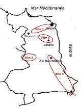
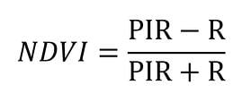

Introduction
Depuis son apparition, l’image satellite occupe une place très importante notamment dans l’observation et le suivi des phénomènes naturels et humains. Dans ce cadre, les analyses des images Landsat de 1988 jusqu’à 2016 nous ont permis de suivre l’évolution des formations végétales naturelles dans le couloir de Taourirt-El Aïoun. L’objectif est de mettre en évidence les changements spatio-temporels des groupements végétaux dans le couloir.

Contexte géographiqu de la zone d’étude
Situé au milieu de la région de l’Oriental, le couloir de Taourirt-El Aïoun est limité au nord par la chaîne montagneuse des Beni Znassène, au sud par les monts de Jerada et les hauts plateaux, à l’est par la plaine des Angad et à l’ouest par la plaine de Guercif
Méthodologie
La méthodologie adoptée consiste à géoréférencer trois images satellitaires Landsat du couloir de Taourirt-El Aïoun de 1988, 2002 et 2016, combiner les bandes spectrales, classer les groupements végétaux et à reconnaître les activités chlorophylliennes de la végétation par l’analyse de l’NDVI mis au point par Rousse et al. (1973). Le résultat de cette analyse prend la forme d’une nouvelle image, la valeur de chaque pixel étant comprise entre 0 (sol nu) et 1 (couvert végétal maximal) (Yvon-Carmen et al. 2004). Il consiste à soustraire à la bande infrarouge la bande rouge et il est exprimé par la relation :

Résultat et discussion
Après l’identification des différentes classes retenues, il est nécessaire de mettre en évidence les signatures spectrales des principales classes étudiées en fonction des principales bandes spectrales exploitées. Cependant, chaque classe possède des caractéristiques radiométriques différentes. Les résultats sont reportés dans les figures suivantes :

Réflectance radiométrique des classes végétales en 2002
Réflectance radiométrique des classes végétales en 2016
Les courbes des figures 2, 3 et 4 montrent une variabilité radiométrique de la réflectance du sol, de l’eau et de la végétation en relation avec les domaines spectraux (bleu, vert, rouge et proche infrarouge). Les classifications dirigées des images satellitales Landsat par le logiciel ERDAS Imagine nous permettent de cartographier la répartition spatiale des diverses types végétaux
Réflectance des classes végétales en 1988
Réflectance des classes végétales en 2002
Réflectance des classes végétales en 2016
Conclusion
La présente étude a permis de mettre en exergue les différents changements spatio-temporels du couvert végétal entre 1988, 2002 et 2016. Durant cette période, les surfaces denses ont régressé en faveur des surfaces moyennes et faibles. Ce recul est dû essentiellement au climat sec caractérisé par des précipitations faibles et irrégulières. Par ailleurs, l’étude de l’NDVI montre un changement de l’état florissant des plantes subissant un recul surtout entre 1988 et 2002. Il existe aussi une grande différence entre les valeurs max et min, ce qui signifie qu’il y a une large superficie qui est formée par des plantes très dégradées dont les valeurs de l’NDVI s’approchent beaucoup de celles du sol nu.